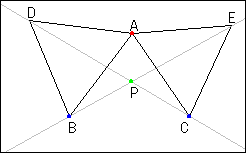

Two Regular Triangles and Locus
Problem
We have two fixed points B and C. Triangles ABD and ACE are equilateral. Point P is the intersection of BE and CD. When point A moves freely on the whole plane, find the locus of point P.

Applet